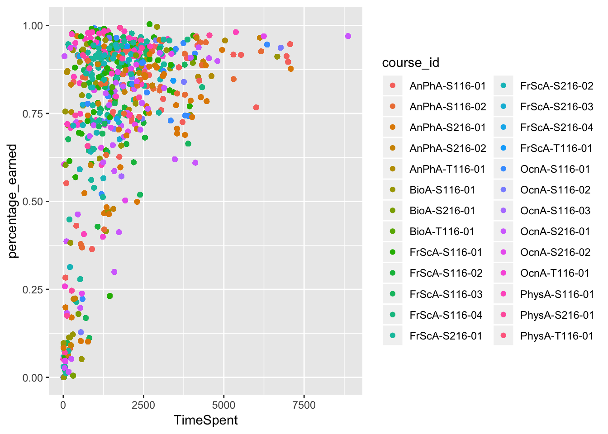
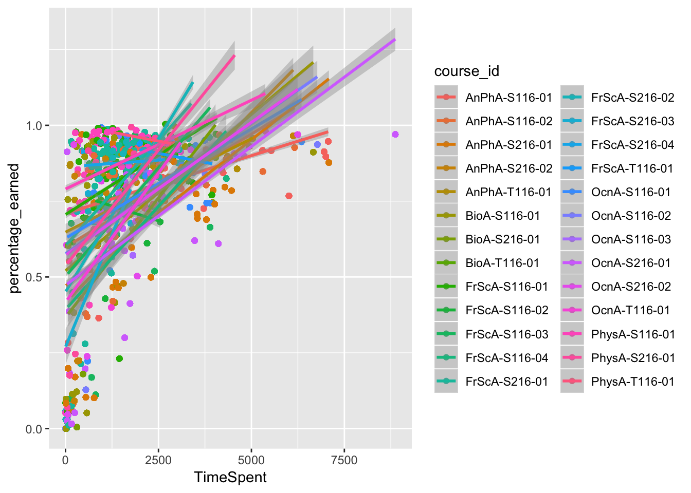

Chapter 10 Linear model (regression)
We can find out exactly what the relationship is using a linear model.
m_linear <- lm(percentage_earned ~ TimeSpent, data = dat)
summary(m_linear)##
## Call:
## lm(formula = percentage_earned ~ TimeSpent, data = dat)
##
## Residuals:
## Min 1Q Median 3Q Max
## -0.63001 -0.07894 0.05366 0.15742 0.34544
##
## Coefficients:
## Estimate Std. Error t value Pr(>|t|)
## (Intercept) 6.102e-01 2.158e-03 282.77 <2e-16 ***
## TimeSpent 7.983e-05 9.399e-07 84.94 <2e-16 ***
## ---
## Signif. codes: 0 '***' 0.001 '**' 0.01 '*' 0.05 '.' 0.1 ' ' 1
##
## Residual standard error: 0.2236 on 29481 degrees of freedom
## (228 observations deleted due to missingness)
## Multiple R-squared: 0.1966, Adjusted R-squared: 0.1966
## F-statistic: 7214 on 1 and 29481 DF, p-value: < 2.2e-1610.1 But what about different courses?
Is there course-specific differences in how much time students spend on the course as well as in how time spent is related to the percentage of points students earned?
ggplot(dat, aes(x = TimeSpent, y = percentage_earned, color = course_id)) +
geom_point()
ggplot(dat, aes(x = TimeSpent, y = percentage_earned, color = course_id)) +
geom_point() +
geom_smooth(method = "lm")
There appears to be so. One way we can test is to use what is called a multi-level model. This requires a new package; one of the most common for estimating these types of models is lme4. We use it very similarly to the lm() function, but we pass it an additional argument about what the groups, or levels, in the data are.
# install.packages("lme4")
library(lme4)
m_course <- lmer(percentage_earned ~ TimeSpent + (1|course_id), data = dat)
summary(m_course)## Linear mixed model fit by REML ['lmerMod']
## Formula: percentage_earned ~ TimeSpent + (1 | course_id)
## Data: dat
##
## REML criterion at convergence: -8619.3
##
## Scaled residuals:
## Min 1Q Median 3Q Max
## -3.3371 -0.3701 0.2154 0.6418 2.1217
##
## Random effects:
## Groups Name Variance Std.Dev.
## course_id (Intercept) 0.008815 0.09389
## Residual 0.043475 0.20851
## Number of obs: 29483, groups: course_id, 26
##
## Fixed effects:
## Estimate Std. Error t value
## (Intercept) 5.820e-01 1.863e-02 31.25
## TimeSpent 8.884e-05 9.273e-07 95.81
##
## Correlation of Fixed Effects:
## (Intr)
## TimeSpent -0.090
## fit warnings:
## Some predictor variables are on very different scales: consider rescalingA common way to understand how much variability is at the group level is to calculate the intra-class correlation. This value is the proportion of the variability in the outcome (the y-variable) that is accounted for solely by the groups identified in the model. There is a useful function in the sjstats package for doing this.
# install.packages("sjstats")
library(sjstats)
icc(m_course)## # Intraclass Correlation Coefficient
##
## Adjusted ICC: 0.169
## Conditional ICC: 0.131This shows that nearly 17% of the variability in the percentage of points students earned can be explained simply by knowing what class they are in.
10.2 Introduction
Gradebooks are nearly ubiquitous throughout K-12 classrooms, whether they exist as standalone Excel files, Google Sheets, or in proprietary software.
This walkthrough goes through a series of analyses using the data science framework (link), using the sample Assessment Types - Points Excel gradebook template from MIT. All data in the sample gradebook have been generated, and do not reflect individual student data.
10.3 Driving Question and Objectives
10.4 Data Import
Setting up our environment (note: how deep do we go into working directories?!)
Importing our data (need to sim data for 25 students)
Check text for object naming conventions, discussion of .csv, .xlsx, versatility of import functions within the tidyverse
File naming - issues that can arise from spaces
gradebook <- readxl::read_excel(here("/data/gradebooks", "ExcelGradeTrackerAssessmentTypePoints_SIMDATA_01.xlsx"))## New names:
## * `` -> ...1
## * `` -> ...3
## * `` -> ...4
## * `` -> ...5
## * `` -> ...6
## * … and 39 more problems10.5 R Markdown
This is an R Markdown document. Markdown is a simple formatting syntax for authoring HTML, PDF, and MS Word documents. For more details on using R Markdown see http://rmarkdown.rstudio.com.
When you click the Knit button a document will be generated that includes both content as well as the output of any embedded R code chunks within the document. You can embed an R code chunk like this:
summary(cars)## speed dist
## Min. : 4.0 Min. : 2.00
## 1st Qu.:12.0 1st Qu.: 26.00
## Median :15.0 Median : 36.00
## Mean :15.4 Mean : 42.98
## 3rd Qu.:19.0 3rd Qu.: 56.00
## Max. :25.0 Max. :120.0010.6 Including Plots
You can also embed plots, for example:

Note that the echo = FALSE parameter was added to the code chunk to prevent printing of the R code that generated the plot.
# Seed for random number generation
set.seed(42)
knitr::opts_chunk$set(cache.extra = knitr::rand_seed, eval = TRUE, echo = FALSE, results = 'hide',
message = FALSE, warning = FALSE)